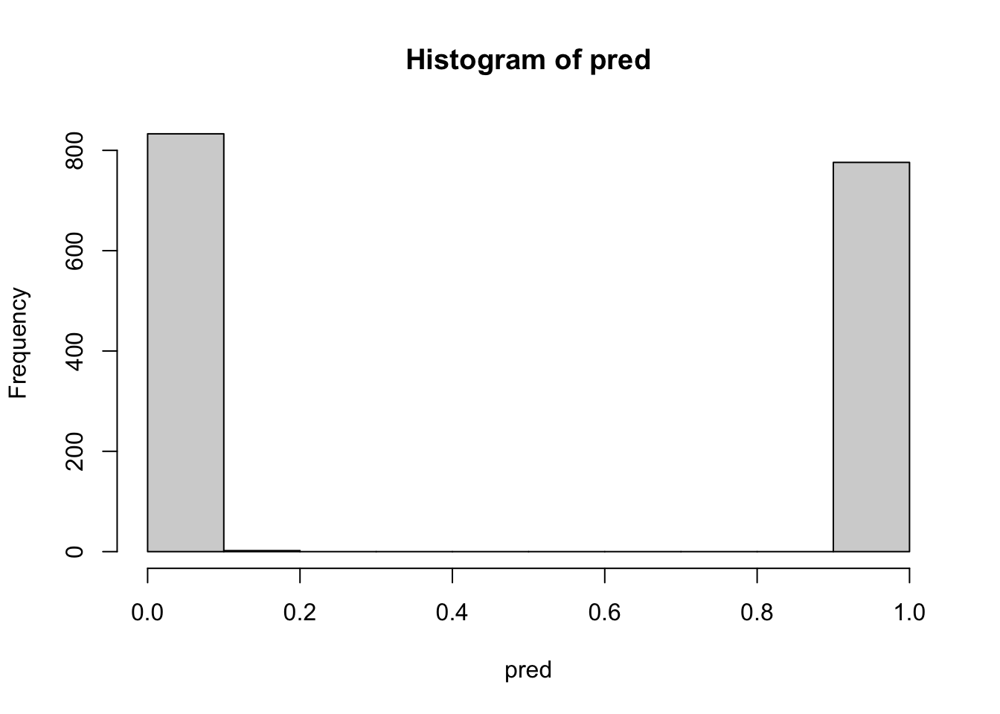

suppressPackageStartupMessages(library(data.table))
data(agaricus.train, package='xgboost')
train <- agaricus.train
data(agaricus.test, package='xgboost')
test <- agaricus.testBoosting vs Bagging – a Comparison
The random forest bagging approach takes bootstrap samples from the data, creates a tree for each bootstrap sample (‘bag’), and uses votes across all trees to determine predicted values. Among R packages that implement this approach, note in particular randomForest and ranger. The ranger package handles calculations much more efficiently than randomForest, and should be used in preference to randomForest with large datasets.
The default number of trees, both for the randomForest function randomForest() and for the ranger function ranger(), is 500. Assuming that the sample data can be treated as a random sample from the population to which results will be applied, the ‘out-of-bag’ error estimate provides an unbiased estimate of the error rate.
By contrast, the boosting approach that is implemented in the xgboost package starts by fitting one or perhaps a small number of trees. For each of the one or more trees, it then calculates the residuals, and fits a tree to the residuals. For details of the process by which each new tree is derived, designed to maximize the ‘gain’, see https://xgboost.readthedocs.io/en/stable/tutorials/model.html. The parameter eta, with values greater than 0 and at most 1, controls the “learning rate”. It sets a factor by which the contribution of each new tree is scaled when it is added to the current approximation. The default is eta=0.3. Smaller values allow finer control over the learning rate, and provide a way to make the model more robust to overfitting, while slowing computations.
Whereas the defaults for random forest parameters generally do a good job, and extensive tuning is not required, xgboost parameters do typically require tuning.
A random forest fit to the data, using ranger functions
library(ranger)
rf1 <- ranger(y=train$label, x=as.matrix(train$data), importance='impurity')imp <- importance(rf1)
hist(imp)The importance values are very widely spread. The number of columns (out of 126) that have some level of importance is 116. The 11 rated as having importance equal to zero either have all values the same, or (one column only) have just one value that differs from the rest.
Now look at the predicted values. Values less than or equal to 0.5 will be treated as implying non-poisonous, with those greater than 0.5 implying poisonous of possibly poisonous:
pred <- predict(rf1, data=test$data)$predictions
table(pred>0.5, test$label)
0 1
FALSE 835 0
TRUE 0 776Now look at the strength of the separation between non-poisonous and poisonous of possibly poisonous mushrooms:
hist(pred, breaks=20)Fit using xgboost functions
We first do a simple fit, with no tuning, using the function xgboost(). (For more advanced features, including custom objective and evaluation functions and the facility for checking on performance on test data with each new round, the function xgb.test() will be required.)
library(xgboost)
bst <- xgboost(data = as.matrix(train$data), label = train$label,
max_depth = 3, eta = 1, nrounds = 2,
nthread = 2, objective = "binary:logistic")[1] train-logloss:0.161178
[2] train-logloss:0.064728 ## Now calculate a measure of the probability that an
## observation belongs in the group with label=1, rather
## than label=0.
pred <- predict(bst, newdata=test$data)
table(pred>0.5, test$label)
0 1
FALSE 835 0
TRUE 0 776hist(pred, breaks=20)The histogram of values of pred indicates that the great majority of observations are very clearly separated into one group rather than the other.
Or, and preferably, if we use xgb.train(), we can do
dtrain <- xgb.DMatrix(train$data, label = train$label, nthread = 2)
dtest <- xgb.DMatrix(test$data, label = test$label, nthread = 2)
watchlist <- list(eval = dtest, train = dtrain)
param <- list(max_depth = 3, eta = 0.75, nthread = 2)
bst <- xgb.train(param, dtrain, nrounds = 4, watchlist,
objective = "binary:logistic")[1] eval-logloss:0.232339 train-logloss:0.230181
[2] eval-logloss:0.110409 train-logloss:0.113869
[3] eval-logloss:0.054348 train-logloss:0.055521
[4] eval-logloss:0.029359 train-logloss:0.030794 What is unexpected here is that the root mean square error is, from the second round on, lower on the test data than on the training data, with the difference increasing with each successive round. This makes it doubtful whether the test data was genuinely a random sample from the total data. We therefore do a new random split of the total data into training and test subsets. Before proceeding, we will check for columns in the data that are constant. These are, in order to reduce the computational load, best removed:
lab <- c(train$label, test$label)
dat <- rbind(train$data,test$data)
(rmcol <- (1:ncol(dat))[apply(dat, 2, function(x)length(unique(x))==1)]) [1] 33 35 38 57 59 88 89 97 103 104dat <- dat[, -rmcol]Now create a new split into the training and test data, and hence new xgb.DMatrix objects.
set.seed(67)
testrows <- sample(1:nrow(dat), size=nrow(test$data))
Dtrain <- xgb.DMatrix(dat[-testrows, ], label = lab[-testrows],
nthread = 2)
Dtest <- xgb.DMatrix(dat[testrows,], label = lab[testrows],
nthread = 2)
watchlist <- list(eval = Dtest, train = Dtrain)param <- list(max_depth = 3, eta = 0.75, nthread = 2)
bst <- xgb.train(param, Dtrain, nrounds = 60, watchlist,
print_every_n = 3, objective = "binary:logistic")[1] eval-logloss:0.230585 train-logloss:0.230804
[4] eval-logloss:0.030782 train-logloss:0.026497
[7] eval-logloss:0.008330 train-logloss:0.005590
[10] eval-logloss:0.003945 train-logloss:0.002763
[13] eval-logloss:0.001929 train-logloss:0.001375
[16] eval-logloss:0.001350 train-logloss:0.000942
[19] eval-logloss:0.001020 train-logloss:0.000759
[22] eval-logloss:0.000907 train-logloss:0.000667
[25] eval-logloss:0.000814 train-logloss:0.000615
[28] eval-logloss:0.000791 train-logloss:0.000563
[31] eval-logloss:0.000751 train-logloss:0.000539
[34] eval-logloss:0.000745 train-logloss:0.000530
[37] eval-logloss:0.000726 train-logloss:0.000522
[40] eval-logloss:0.000729 train-logloss:0.000515
[43] eval-logloss:0.000717 train-logloss:0.000508
[46] eval-logloss:0.000699 train-logloss:0.000503
[49] eval-logloss:0.000697 train-logloss:0.000498
[52] eval-logloss:0.000693 train-logloss:0.000493
[55] eval-logloss:0.000686 train-logloss:0.000490
[58] eval-logloss:0.000678 train-logloss:0.000486
[60] eval-logloss:0.000679 train-logloss:0.000484 Thus, around 58 rounds appear required, in order to minimize logloss. For purposes of distinguishing between the two classes of mushrooms, this is gross overkill. Just one round is enough to give a very clear separation. Try:
bst1 <- xgboost(Dtrain, nrounds = 1, eta=.75,
objective = "binary:logistic")[1] train-logloss:0.204290 hist(predict(bst1, newdata=Dtest))Now look at importance measures (1) from the single round fit (bst1), and (2) from the 64 rounds fit (bst):
imbst1 <- xgb.importance(model=bst1)
imbst <- xgb.importance(model=bst)
"Importances identified"[1] "Importances identified"c("Simgle round fit"= dim(imbst1)[1], "64 round fit"= dim(imbst)[1])Simgle round fit 64 round fit
9 35 The following plots the largest 10 importance values (the column is labeled Gain in the output) from the 64 round fit:
xgb.plot.importance(imbst, top_n=10)
Just 35 of the 116 columns have been used, with most giving only a very slight gain. Consider carefully what this means. The implication is that after accounting for effects that can be accounted for using these 35 columns, other columns add nothing extra. This happens because of the correlation structure. The first tree that is chosen sets the scene for what follows. The variety of trees that are chosen by ranger() gives an indication of how different that initial tree might be. Each new bootstrap sample simulates the taking of a new random sample from the population from which the original sample was taken.
By contrast, ranger() gives some level of importance to all features:
library(ranger)
bag <- ranger(y=lab, x=dat, importance='impurity')
imbag <- importance(bag)
length(imbag)[1] 116summary(imbag) Min. 1st Qu. Median Mean 3rd Qu. Max.
0.000 1.453 3.818 17.366 16.181 233.530 Look also at ranger predictions:
pred <- predict(bag, data=test$data)$predictions
table(pred>0.5, test$label)
0 1
FALSE 835 0
TRUE 0 776hist(pred)
Notice the very clear separation between values that round to 0 (not poisonous) and 1 (poisonous or possibly poisonous).
What happens if we remove all the columns that were not given any level of importance in the xgboost.train() analysis, and then fit a random forest?
rnam <- unlist(imbst[,1])
datbst <- dat[, rnam]
rfSome <- ranger(y=lab[-testrows], x=datbst[-testrows, ], importance='impurity')
pred <- predict(rfSome, data=dat[testrows,])$predictions
table(pred>0.5, lab[testrows])
0 1
FALSE 840 0
TRUE 0 771hist(pred, breaks=20)A more conventional tree – fit using rpart::rpart
library(rpart)
datt <- cbind(label=lab, as.data.frame(as.matrix(dat)))
rp <- rpart(label~., data=datt, method="class", cp=0.001)
pr <- predict(rp, type='vector')
table(pr, datt$label)
pr 0 1
1 4208 0
2 0 3916The diamonds dataset – this is a more serious challenge
For the agaricus dataset, distinguishing the two classes of mushroom was an easy task – all three methods that were tried did an effective job. For a more realistic comparison of the methodologies, we will use the gplot2::diamonds dataset.
The website https://lorentzen.ch/index.php/2021/04/16/a-curious-fact-on-the-diamonds-dataset/ (Michael Mayer) points out that that more than 25% of the observations appear to be duplicates. For example, there are exactly six diamonds of 2.01 carat and a price of 16,778 USD that all have the same color, cut and clarity, with other measures showing different perspectives on the same data. Thus observe:
diamonds <- ggplot2::diamonds
id <- apply(diamonds[,c(1:4,7)], 1, paste0, collapse='-')
keepFirst <- !duplicated(id) ## all except the first
## keepLast <- rev(!duplicated(rev(id)))
diamondA <- diamonds[keepFirst, ] ## Retain only the first
c(nrow(diamondA),nrow(diamondA)/4) ## 39756, 9939[1] 39756 9939## diamondZ <- diamonds[keepLast, ] ## Retain only the last
table(keepFirst)/length(id)keepFirst
FALSE TRUE
0.2629588 0.7370412 keepFirst
FALSE TRUE
0.2629588 0.7370412
The ranger package is an alternative to randomForest that is much more efficient for working with large datasets. Working with the dataset that retains only the first of the ‘duplicates’, one finds:
set.seed(31)
library(ranger)
Y <- diamondA[,"price", drop=T]
samp50pc <- sample(1:nrow(diamondA), size=9939*2)
(diamond50pc.rf <- ranger(x=diamondA[samp50pc,-7], y=log(Y[samp50pc])))Ranger result
Call:
ranger(x = diamondA[samp50pc, -7], y = log(Y[samp50pc]))
Type: Regression
Number of trees: 500
Sample size: 19878
Number of independent variables: 9
Mtry: 3
Target node size: 5
Variable importance mode: none
Splitrule: variance
OOB prediction error (MSE): 0.0107198
R squared (OOB): 0.9886767 ## OOB prediction error (MSE): 0.0107198
## OOB prediction error (MSE): 0.01072289 ## Repeat calculationpred <- predict(diamond50pc.rf,
data=diamondA[-samp50pc,-7])$predictions
sum((pred-log(Y[-samp50pc]))^2)/length(pred)[1] 0.01141683As expected this is very similar to the OOB mean square error.
Fit using xgboost::xgb.train()
The diamonds data includes some columns that are factors or ordered factors.
diamondA[1,]# A tibble: 1 × 10
carat cut color clarity depth table price x y z
<dbl> <ord> <ord> <ord> <dbl> <dbl> <int> <dbl> <dbl> <dbl>
1 0.23 Ideal E SI2 61.5 55 326 3.95 3.98 2.43Observe that color is an ordered factor – there is an order of preference from D (best) to J (worst). The xgboost functions xgboost() and xgb.DMatrix() require a model matrix as input, rather than a dataframe that can include factors and ordered factors in its columns. The function sparse.model.matrix() from the Matrix package can be used to create the needed model matrix. The function xgb.DMatrix() goes on to create an xgb.DMatrix object of the type needed for use of the function xgb.train().
library(Matrix)
sparsem <- sparse.model.matrix(price~., data=diamondA)[,-1]Specifying price as the dependent variable ensures that the corresponding is excluded from the matrix that is created. Also, the initial column of 1’s serves no useful purpose for the tree-based calculations, and is removed.
Dtrain <- xgb.DMatrix(as.matrix(sparsem[samp50pc, ]),
label = log(Y[samp50pc]), nthread = 2)
Dtest <- xgb.DMatrix(sparsem[-samp50pc,],
label = log(Y[-samp50pc]), nthread = 2)
watchlist <- list(eval = Dtest, train = Dtrain)
param <- list(max_depth = 5, eta = 0.4, nthread = 2)
bst <- xgb.train(param, Dtrain, nrounds = 81, watchlist,
print_every_n = 3)[1] eval-rmse:4.560709 train-rmse:4.563817
[4] eval-rmse:1.001089 train-rmse:1.000100
[7] eval-rmse:0.252409 train-rmse:0.248454
[10] eval-rmse:0.132035 train-rmse:0.123515
[13] eval-rmse:0.118572 train-rmse:0.108683
[16] eval-rmse:0.115815 train-rmse:0.105641
[19] eval-rmse:0.114015 train-rmse:0.102737
[22] eval-rmse:0.112247 train-rmse:0.100619
[25] eval-rmse:0.110841 train-rmse:0.098610
[28] eval-rmse:0.109701 train-rmse:0.096937
[31] eval-rmse:0.109257 train-rmse:0.096040
[34] eval-rmse:0.108454 train-rmse:0.094530
[37] eval-rmse:0.107567 train-rmse:0.093120
[40] eval-rmse:0.106824 train-rmse:0.091683
[43] eval-rmse:0.106709 train-rmse:0.091043
[46] eval-rmse:0.105924 train-rmse:0.089707
[49] eval-rmse:0.105779 train-rmse:0.089122
[52] eval-rmse:0.105620 train-rmse:0.088774
[55] eval-rmse:0.105428 train-rmse:0.088140
[58] eval-rmse:0.104845 train-rmse:0.086958
[61] eval-rmse:0.104801 train-rmse:0.086337
[64] eval-rmse:0.104729 train-rmse:0.085900
[67] eval-rmse:0.104302 train-rmse:0.084950
[70] eval-rmse:0.104085 train-rmse:0.084115
[73] eval-rmse:0.104079 train-rmse:0.083857
[76] eval-rmse:0.103845 train-rmse:0.083048
[79] eval-rmse:0.103723 train-rmse:0.082711
[81] eval-rmse:0.103738 train-rmse:0.082495